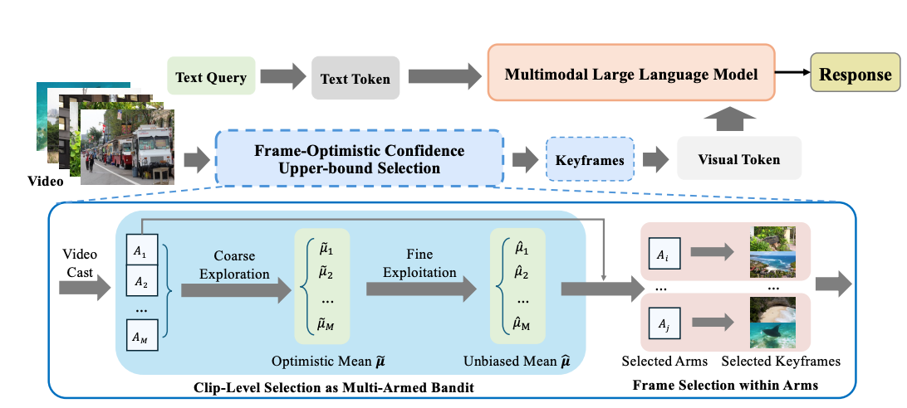

FOCUS: Efficient Keyframe Selection for Long Video Understanding
National University of Singapore · TikTok
ICLR 2026 · arXiv:2510.27280 · Preprint first submitted October 31, 2025; revised November 24, 2025
Abstract
Multimodal large language models (MLLMs) represent images and video frames as visual tokens. Scaling from single images to hour-long videos, however, inflates the token budget far beyond practical limits. Popular pipelines therefore either uniformly subsample or apply keyframe selection with retrieval-style scoring using smaller vision-language models. However, these keyframe selection methods still rely on pre-filtering before selection to reduce the inference cost and can miss the most informative moments. We propose FOCUS, Frame-Optimistic Confidence Upper-bound Selection, a training-free, model-agnostic keyframe selection module that selects query-relevant frames under a strict token budget. FOCUS formulates keyframe selection as a combinatorial pure-exploration (CPE) problem in multi-armed bandits: it treats short temporal clips as arms, and uses empirical means and Bernstein confidence radius to identify informative regions while preserving exploration of uncertain areas. The resulting two-stage exploration-exploitation procedure reduces from a sequential policy with theoretical guarantees, first identifying high-value temporal regions, then selecting top-scoring frames within each region. On two long-video question-answering benchmarks, FOCUS delivers substantial accuracy improvements while processing less than 2% of video frames. For videos longer than 20 minutes, it achieves an 11.9% gain in accuracy on LongVideoBench, demonstrating its effectiveness as a keyframe selection method and providing a simple and general solution for scalable long-video understanding with MLLMs.
Method overview

- Partition the video. Treat short temporal clips as arms in a combinatorial pure-exploration problem.
- Explore informative regions. Use empirical relevance scores and Bernstein confidence bounds to balance promising regions with uncertain ones.
- Select final keyframes. Choose high-scoring frames within the selected regions, respecting the downstream model’s visual-token budget.
Key results
Evaluation covers long-video question answering on LongVideoBench and Video-MME. Performance depends on the downstream model, frame budget, and evaluation setting; see the paper for the full comparisons and ablations.
Citation
Zhu, Z., Xu, H., Luo, Y., Liu, Y., Sarkar, K., Yang, Z., & You, Y. (2025). FOCUS: Efficient Keyframe Selection for Long Video Understanding. arXiv. https://doi.org/10.48550/arXiv.2510.27280
BibTeX for the arXiv version:
@article{zhu2025focus,
title={FOCUS: Efficient Keyframe Selection for Long Video Understanding},
author={Zhu, Zirui and Xu, Hailun and Luo, Yang and Liu, Yong and Sarkar, Kanchan and Yang, Zhenheng and You, Yang},
journal={arXiv preprint arXiv:2510.27280},
year={2025},
doi={10.48550/arXiv.2510.27280},
url={https://arxiv.org/abs/2510.27280}
}